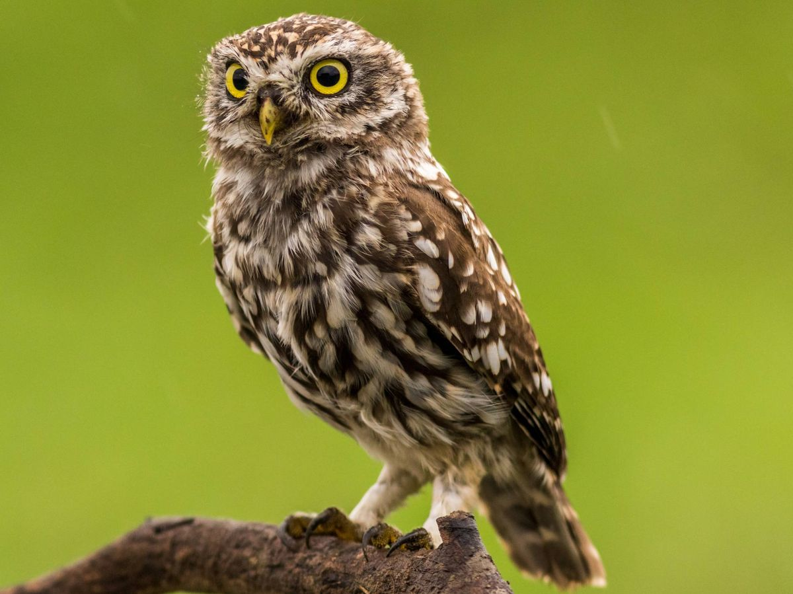

BUHO
Strigiformes

Es un ave que puede vivir hasta 20 años y suele habitar el mismo territorio durante toda su vida,
en especial, áreas de bosques con árboles perenne (que no pierden sus hojas durante el invierno)
donde elige establecer sus nidos. La hembra suele poner entre tres a cuatro huevos.
El búho es una especie muy odiada entre los pájaros.
Los búhos no tienen los ojos a los lados de la cabeza.
El búho es todo oídos.
El búho puede girar la cabeza 270 grados en ambas direcciones.
Su plumaje es mucho más suave que el de otras rapaces.
PAGINA PRINCIPAL